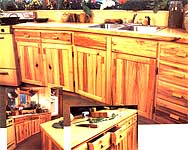

ABOVE: The handcrafted popular cabinets complement our decor. FAR LEFT: The faceted wall units and, to their rigth, a home-built 12-volt refrigerator we'll discuss in a future issue. LEFT: The ""work"" side of the kitchen island.